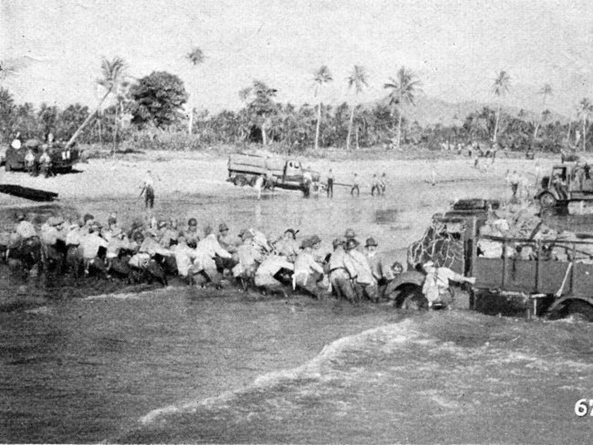
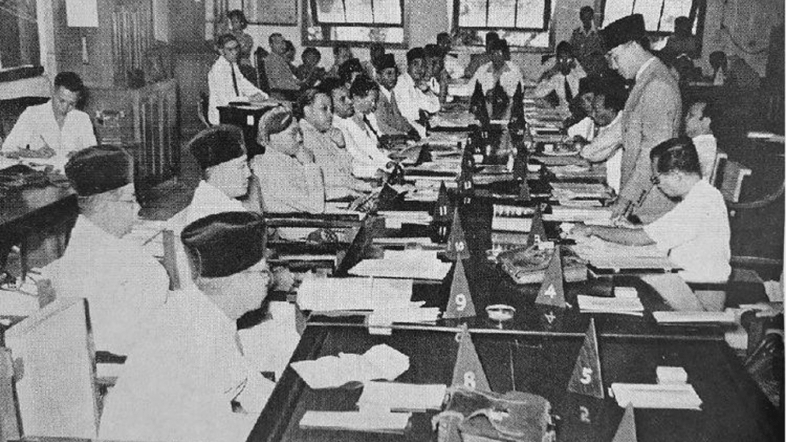
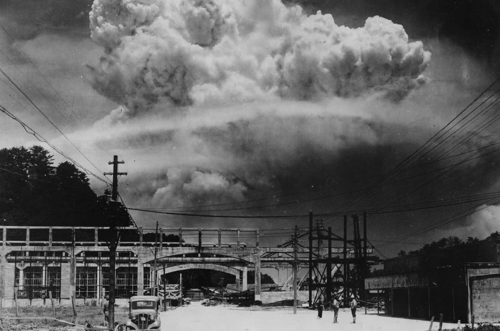
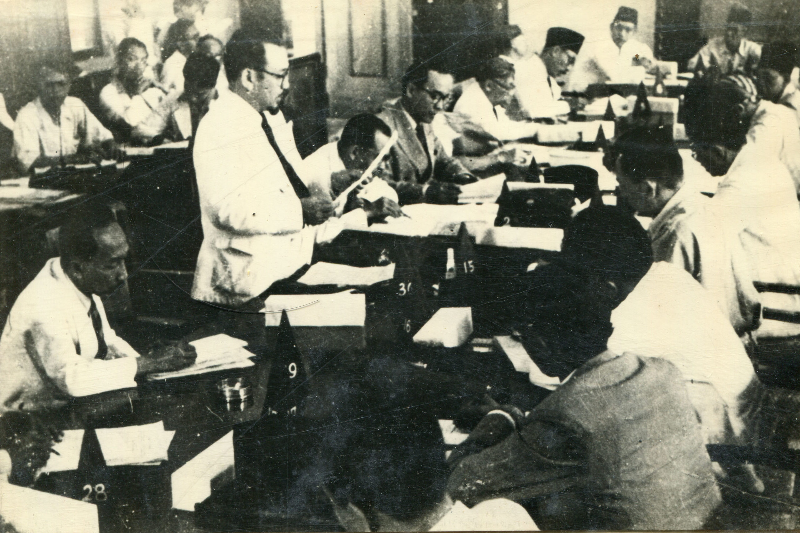
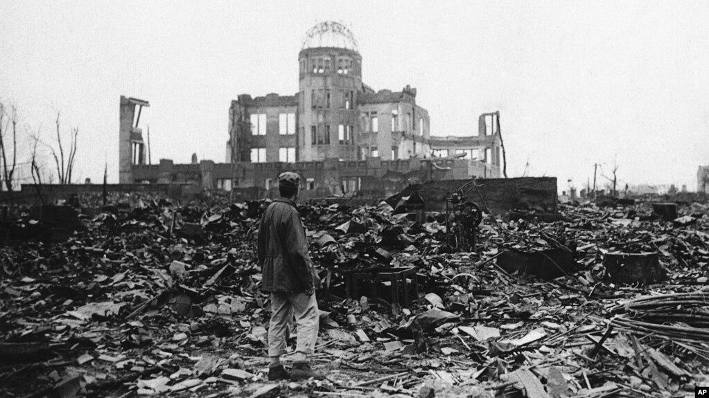
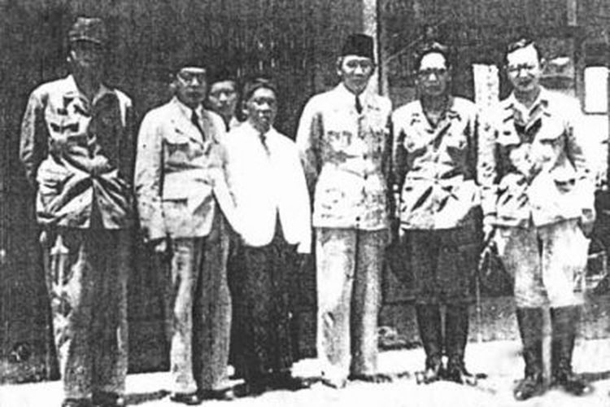
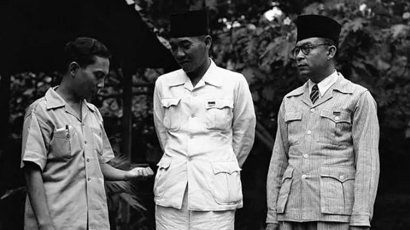
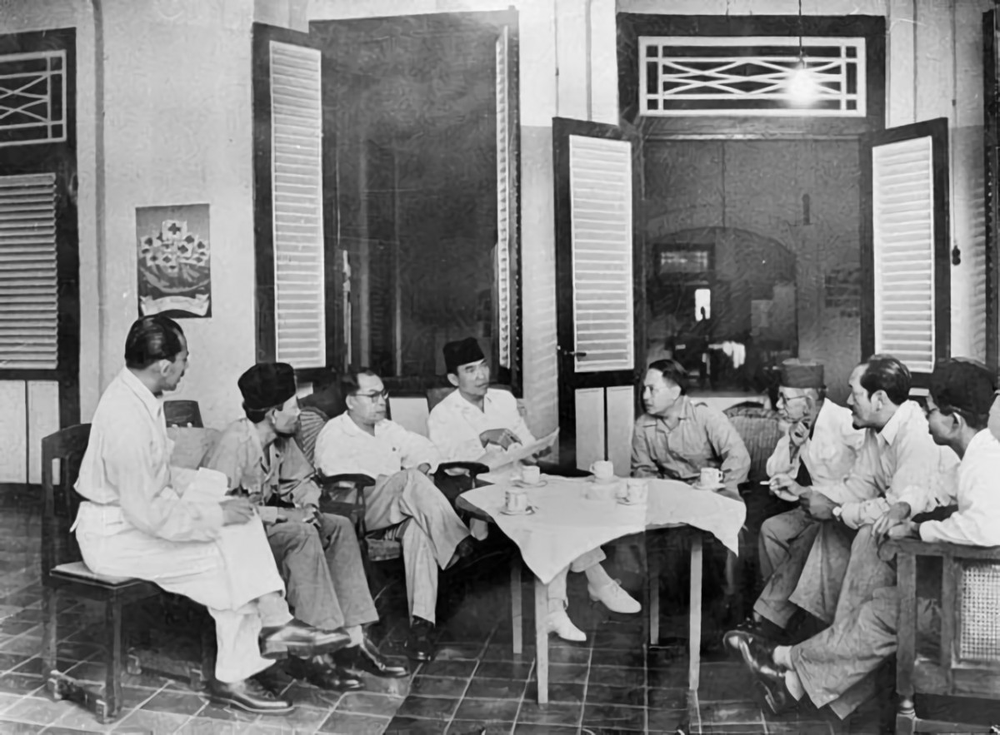
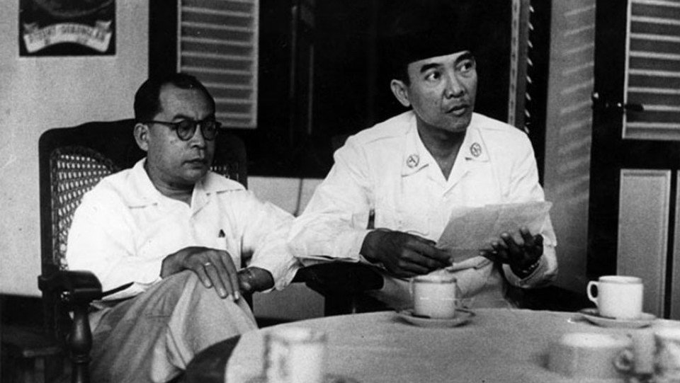
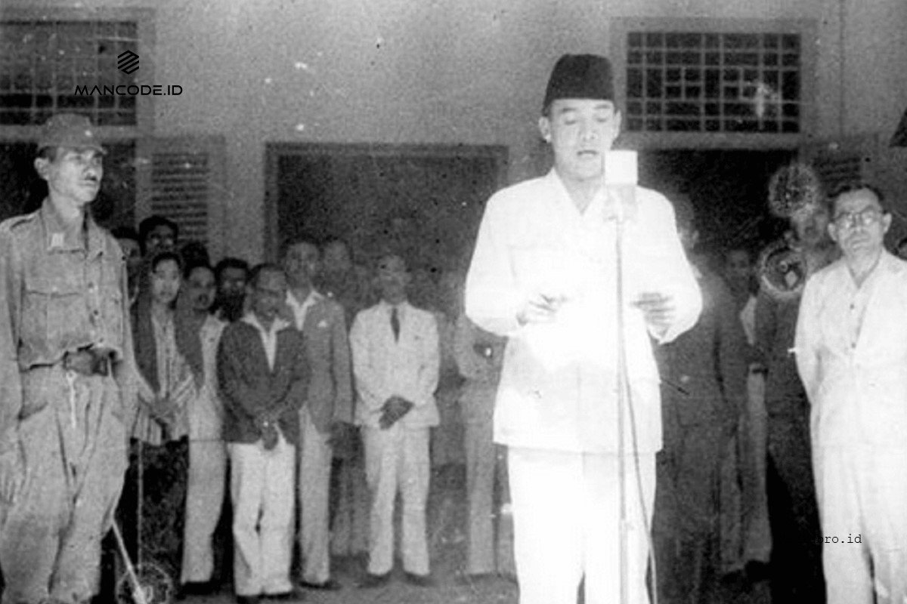

8 Maret 1942
Belanda menyerah di Jawa
Gubernur Jenderal Tjarda Van Starkenborgh Stachouwer ditawan oleh Jepang

29 April 1945
Pendirian Badan Penyelidik Usaha-usaha Persiapan Kemerdekaan Indonesia (BPUPKI)

6 Agustus 1945
Kota Hiroshima Jepang dijatuhi bom atom oleh Amerika Serikat

7 Agustus 1945
BPUPKI dibubarkan
Panitia Persiapan Kemerdekaan Indonesia (PPKI) dibentuk

9 Agustus 1945
Kota Nagasaki Jepang dijatuhi bom atom kedua oleh Amerika Serikat

12 Agustus 1945
Soekarno, Moh Hatta dan Radjiman Wedyodiningrat bertemu Marsekal Terauchi di Dalat (Vietnam)

14 Agustus 1945
Soekarno, Moh Hatta dan Radjiman Wedyodiningrat kembali ke Indonesia
Sutan Syahir mendesak Soekarno-Hatta untuk memproklamasikan kemerdekaan Indonesia

15 Agustus 1945
Jepang menyerah tanpa syarat kepada sekutu dan terjadi kekosongan kekuasaan di Indonesia
Golongan muda mendesak Soekarno segera memproklamasikan kemerdekaan pada 16 Agustus 1945
Soekarno menolak karena ingin meminta pendapat PPKI

16 Agustus 1945
Soekarno-Hatta diamankan oleh golongan muda (Chairul Saleh, Dr. Muwardi, Sukarni dan Jusuf Kunto) ke Rengasdengklok, Karawang, Jawa Barat
Soekarno-Hatta dipaksa segera memproklamasikan kemerdekaan lewat radio

17 Agustus 1945
Naskah Proklamasi disusun di rumah Laksamana Maeda
Soekarno membacakan teks Proklamasi Kemerdekaan Indonesia di rumah, Jalan Pegangsaan Timur, Nomor 56, Jakarta, pukul 10.00 WIB
